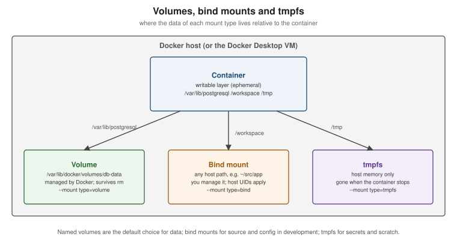

Storage: Volumes, Bind Mounts and tmpfs
|
This content was generated with the assistance of AI and should be verified against the official documentation before being relied on in production. |
A container’s writable layer lives and dies with the container, so anything that must survive a restart,
an upgrade or a docker rm needs to live somewhere else. Docker offers three kinds of mount for that — volumes,
bind mounts and tmpfs — plus image mounts for read-only content. Learning Docker (chapter 7) explains volumes and
bind mounts in terms that still apply; this page brings them up to date for Docker Engine 29.8.x and Docker Desktop
4.91 or later.
The writable layer is ephemeral
Every file a container writes outside a mount lands in its writable layer (see Images, Layers and Tags). That layer is fine for scratch data, but it is slower than a mount (writes go through the storage driver’s copy-on-write), it is tied to one container, and it is deleted with the container. Databases, uploaded files and anything else you want to keep belong in a mount.

| Volume | Bind mount | tmpfs | |
|---|---|---|---|
Where the data lives |
A Docker-managed directory ( |
Any path on the host you choose |
Host memory only |
Created by |
|
You — the host path must exist (with |
Docker, per container |
Survives |
Yes |
Yes (it is your host directory) |
No |
Shareable between containers |
Yes |
Yes |
No |
Typical use |
Database files, persistent application data |
Source code in development, configuration files |
Secrets or scratch data that must not touch disk |
Derived from Storage.
Volumes
Volumes are the recommended way to persist data. Docker creates and manages them, they work the same on Linux, Docker Desktop and in Compose, they can be backed up and migrated, and volume drivers can place them on NFS, CIFS or cloud storage.
docker volume create orders-db-data
docker run -d --name orders-db \
-e POSTGRES_PASSWORD=dev-only-password \
--mount type=volume,src=orders-db-data,dst=/var/lib/postgresql \
postgres:18.1
docker volume ls
docker volume inspect orders-db-data # driver, mountpoint, labels
docker rm -f orders-db && docker volume ls # the volume -- and the data -- is still there
docker volume rm orders-db-data # only when no container uses it
docker volume prune # remove unused anonymous volumes (add --all for named ones)Derived from Volumes. The password is a development-only placeholder.
-
Named vs. anonymous:
-v /datawithout a name creates an anonymous volume with a random ID — hard to find again and removed bydocker run --rmtogether with the container. Name the volumes you care about. -
Pre-population: when an empty volume is mounted over a directory that contains files in the image, Docker copies those files into the volume first (bind mounts do not do this).
-
Read-only:
--mount type=volume,src=config,dst=/etc/app,readonly(or-v config:/etc/app:ro).
Bind mounts
A bind mount maps a host file or directory into the container. It is the tool for development loops — edit on the host, see the change in the container — and for injecting a configuration file:
docker run --rm -it \
--mount type=bind,src="$(pwd)",dst=/workspace \
--mount type=bind,src="$(pwd)/config/application.yaml",dst=/app/config/application.yaml,readonly \
-w /workspace eclipse-temurin:25-jdk ./mvnw -q -B verifyDerived from Bind mounts. Points to watch:
-
Permissions and UIDs: the container sees host files with their numeric owner. A process running as UID 10001 in the container cannot write to a host directory owned by UID 1000 unless permissions allow it; match the UIDs (
-u "$(id -u):$(id -g)"), or rely on Docker Desktop, which maps ownership for you. -
Read-only (
readonly/:ro) for anything the container should not modify. -
SELinux: on Fedora, RHEL and CentOS Stream hosts add
:z(shared label) or:Z(private label) with-vso the container may access the files; never relabel system directories such as/homeor/usr. -
--mountvs.-v:-v host-path:container-pathsilently creates a missing host directory (owned by root);--mount type=bindfails instead, which is usually what you want.--mountis also more explicit (key=valuepairs) and is the only syntax for some options, so prefer it in scripts.
tmpfs mounts
A tmpfs mount is backed by memory and disappears when the container stops — useful for secrets you do not want on
disk and for scratch space in a container with a --read-only root filesystem:
docker run -d --read-only --mount type=tmpfs,dst=/tmp,tmpfs-size=64m,tmpfs-mode=1777 orders-service:1.4.0Derived from tmpfs mounts. tmpfs mounts are Linux-only and cannot be shared between containers.
Image mounts
An image mount exposes the filesystem of another image read-only inside the container, without copying it into a layer — for example to bring debugging tools or static assets into a minimal container. Image mounts are no longer experimental as of Engine 29.7:
docker run --rm --mount type=image,source=busybox:musl,destination=/dbg alpine /dbg/bin/ls /dbg/binDerived from Image mounts.
Backing up and restoring a volume
A throwaway container that mounts both the volume and a host directory can archive or restore the data with ordinary tools. Stop the writer first (or use the database’s own dump tool) for a consistent copy.
docker stop orders-db
docker run --rm -v orders-db-data:/data:ro -v "$(pwd)/backup":/backup ubuntu:24.04 \
tar czf /backup/orders-db.tgz -C /data .
docker start orders-db
# Restore into a fresh volume
docker volume create orders-db-restored
docker run --rm -v orders-db-restored:/data -v "$(pwd)/backup":/backup ubuntu:24.04 \
tar xzf /backup/orders-db.tgz -C /dataDerived from Back up,
restore, or migrate data volumes. The official example borrows another container’s mounts with
--volumes-from; mounting the named volume directly, as above, is equivalent and clearer.
Docker Desktop: file sharing and synchronized file shares
On macOS and Windows, bind mounts cross the boundary into Docker Desktop’s Linux VM (see
Docker Architecture and
the OCI). Named volumes live inside the VM and are fast; bind-mounted host directories are shared through
virtiofs (or the WSL 2 filesystem) and can be slow for large trees such as node_modules or a Maven reactor.
Remedies, in order:
-
Keep write-heavy directories (
target/,node_modules, database files) in named volumes rather than bind mounts. -
On Windows, keep the source tree inside the WSL 2 filesystem, not on
C:\. -
Use synchronized file shares, which keep a fast in-VM copy of a host directory synchronised in both directions (a Docker subscription feature).
-
Use Compose Watch to sync files instead of bind-mounting them (see Compose in Practice).
Which host directories may be bind-mounted is controlled under Settings > Resources > File sharing.
Storage drivers vs. the containerd image store
Mounts bypass the storage layer entirely; the storage driver (overlay2) or containerd snapshotter only handles
image layers and the writable layer. That distinction, and how Engine 29 changed the default, is described on
Docker
Architecture and the OCI.
Superseded: data-volume containers and --volumes-from
Learning Docker (chapter 7) and Docker: Up & Running describe data-volume containers: a stopped container
created only to own volumes, which other containers attach with --volumes-from. That pattern predates named
volumes (Docker 1.9) and is obsolete: create a named volume with docker volume create and mount it by name with
--mount or in Compose. --volumes-from remains available for one-off tasks such as the backup above, but not as
a way to organise persistent data.